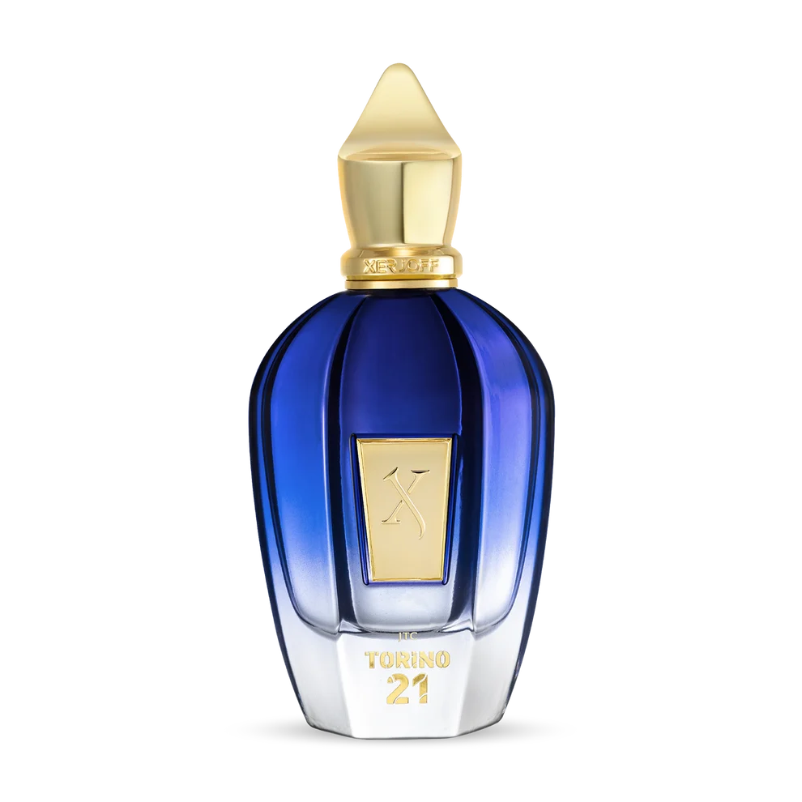
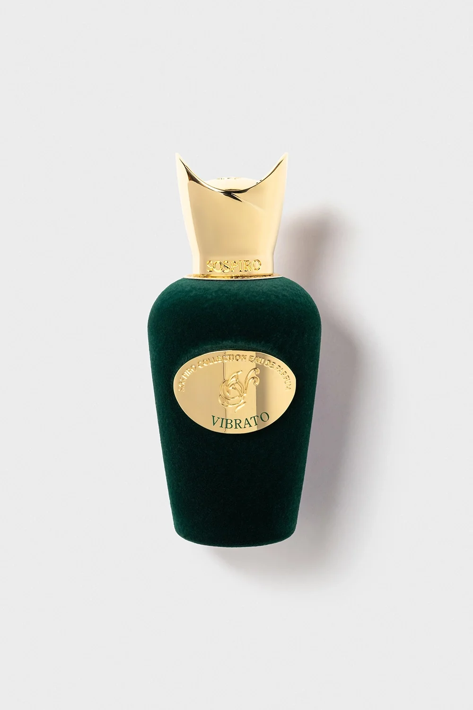

Liberdade criativa
Exploração de composições e combinações olfativas menos convencionais.
A fragrância como expressão artística. Criatividade, identidade e exclusividade.
A perfumaria de nicho é representada por casas cuja atividade principal está voltada à criação e comercialização de fragrâncias.
Essas casas geralmente valorizam a liberdade criativa, a originalidade das composições e a construção de experiências olfativas diferenciadas.
Seus perfumes costumam apresentar preços elevados, distribuição seletiva e grande atenção à escolha das matérias-primas. Entretanto, pertencer à perfumaria de nicho não garante necessariamente maior qualidade, fixação ou projeção.
Exploração de composições e combinações olfativas menos convencionais.
Distribuição frequentemente seletiva e posicionamento de luxo.
Fragrâncias que buscam transmitir conceitos, sensações e personalidade.

Uma releitura intensa do clássico Aventus, combinando nuances frutadas, cítricas, amadeiradas e especiadas.
Amadeirado e frutado Site oficial ↗
Uma fragrância fresca e aromática inspirada na energia do tênis, com nuances de limão, hortelã e manjericão.
Fresco e aromático Site oficial ↗
Uma composição que combina frescor cítrico, nuances florais, especiarias e uma base amadeirada.
Cítrico e amadeirado Site oficial ↗Descubra a relação entre as grandes casas de moda e o universo das fragrâncias.
Próxima categoria →